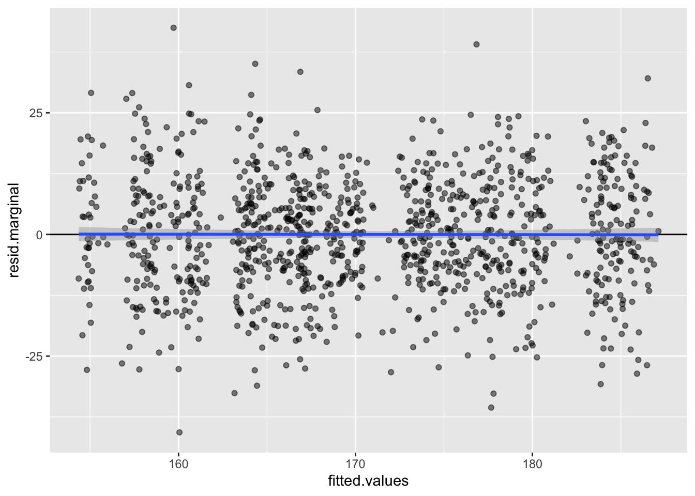
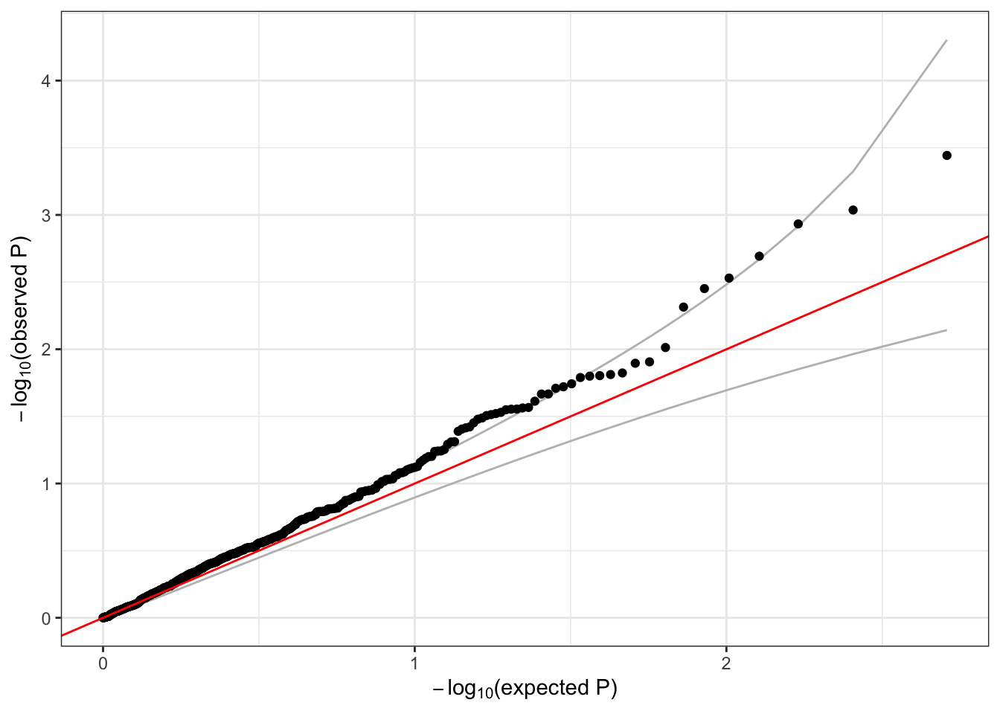
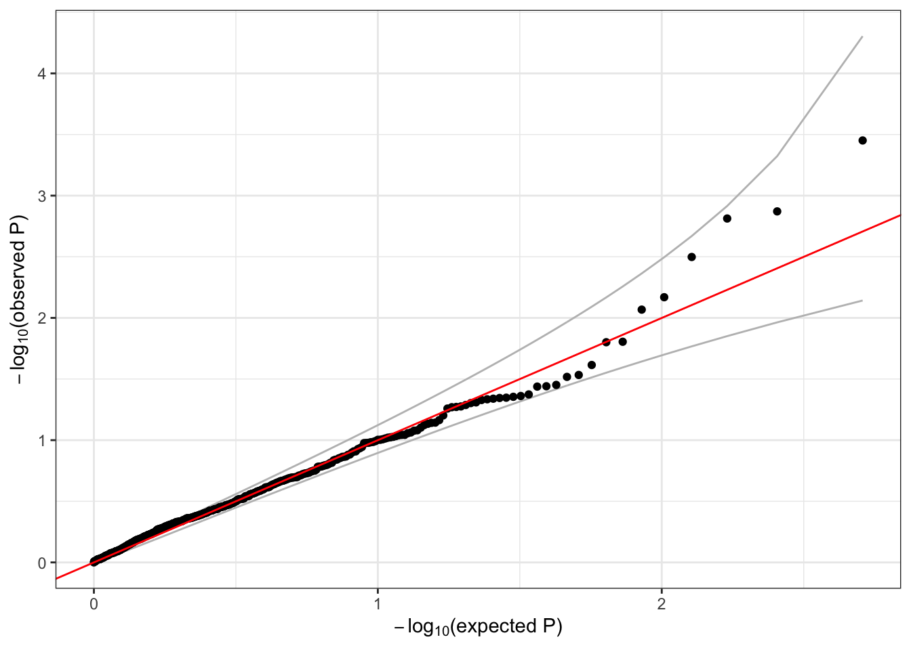

7 Mixed models
These exercises extend what was previously introduced in the association tests from regression models to mixed models that account for genetic relatedness among samples.
7.1 Null model
Recall that the first step in our association testing procedure is to fit the null model. In addition to the AnnotatedDataFrame with phenotype data that we used previously, we will also use the ancestry PCs and pairwise kinship estimates we created in the previous session. We will use the first 4 PCs to adjust for ancestry.
# sample annotation
repo_path <- "https://github.com/UW-GAC/SISG_2021/raw/master"
if (!dir.exists("data")) dir.create("data")
sampfile <- "data/sample_phenotype_annotation.RData"
if (!file.exists(sampfile)) download.file(file.path(repo_path, sampfile), sampfile)
annot <- get(load(sampfile))
library(Biobase)
head(pData(annot))## sample.id subject.id Population Population.Description sex status age height study
## 1 HG00096 HG00096 GBR British in England and Scotland M 0 47 165.300 study_1
## 2 HG00097 HG00097 GBR British in England and Scotland F 1 47 144.780 study_3
## 3 HG00099 HG00099 GBR British in England and Scotland F 0 40 185.500 study_2
## 4 HG00100 HG00100 GBR British in England and Scotland F 1 45 150.622 study_3
## 5 HG00101 HG00101 GBR British in England and Scotland M 0 40 177.800 study_3
## 6 HG00102 HG00102 GBR British in England and Scotland F 0 49 169.100 study_1# load the ancestry PCs
pcfile <- "data/pcs.RData"
if (!file.exists(pcfile)) download.file(file.path(repo_path, pcfile), pcfile)
pcs <- get(load(pcfile))
pcs <- pcs[,c("sample.id", "PC1", "PC2", "PC3", "PC4")]
head(pcs)## sample.id PC1 PC2 PC3 PC4
## HG00096 HG00096 -0.02189121 -0.03637024 -0.01328390 0.005533490
## HG00097 HG00097 -0.02002924 -0.03285711 -0.01207786 0.005390183
## HG00099 HG00099 -0.02088688 -0.03330825 -0.01510526 0.004499776
## HG00100 HG00100 -0.02031270 -0.03975678 -0.01908062 0.004291604
## HG00101 HG00101 -0.02038482 -0.03437442 -0.01328870 0.002310498
## HG00102 HG00102 -0.02144725 -0.03970277 -0.01391896 -0.001245155# merge PCs with the sample annotation
library(dplyr)
dat <- left_join(pData(annot), pcs, by="sample.id")
# update the AnnotatedDataFrame
pData(annot) <- dat
save(annot, file="data/sample_phenotype_pcs.RData")We can create a kinship matrix from the output of pcrelate. We multiply the kinship values by 2 to get values on the same scale as the standard GRM. This matrix is represented in R as a symmetric matrix object from the Matrix package.
kinfile <- "data/pcrelate_kinship.RData"
if (!file.exists(kinfile)) download.file(file.path(repo_path, kinfile), kinfile)
pcrel <- get(load(kinfile))
library(GENESIS)
kinship <- pcrelateToMatrix(pcrel, scaleKin=2, verbose=FALSE)
dim(kinship)## [1] 1126 1126kinship[1:5,1:5]## 5 x 5 Matrix of class "dsyMatrix"
## HG00096 HG00097 HG00099 HG00100 HG00101
## HG00096 0.9906231740 0.036922756 0.010409075 0.0005780419 0.016522827
## HG00097 0.0369227560 1.001560563 -0.000653982 0.0035158297 0.007678616
## HG00099 0.0104090751 -0.000653982 0.937748649 0.0556213201 -0.003235074
## HG00100 0.0005780419 0.003515830 0.055621320 1.0111688406 0.017959707
## HG00101 0.0165228269 0.007678616 -0.003235074 0.0179597069 0.965028548When running a mixed model analysis, we still fit the null model using the fitNullModel function in GENESIS. Now, we include the kinship matrix in the model with the cov.mat argument, which is used to specify the random effect(s) in the model with covariance structure(s) proportional to the supplied matrix(s). The inclusion of these random effects is what makes this a mixed model, rather than a simple regression model. We also add the ancestry PCs to the list of covariates and allow for heterogeneous residual variance by study with the group.var argument, as before.
nullmod <- fitNullModel(annot,
outcome="height",
covars=c("sex", "age", "study", paste0("PC", 1:4)),
cov.mat=kinship,
group.var="study",
verbose=FALSE)
save(nullmod, file="data/null_mixed_model.RData")We can investigate the output from fitNullModel.
# description of the model we fit
nullmod$model## $hetResid
## [1] TRUE
##
## $family
##
## Family: gaussian
## Link function: identity
##
##
## $outcome
## [1] "height"
##
## $covars
## [1] "sex" "age" "study" "PC1" "PC2" "PC3" "PC4"
##
## $formula
## [1] "height ~ sex + age + study + PC1 + PC2 + PC3 + PC4 + (1|A) + var(study)"# fixed effect regression estimates
nullmod$fixef## Est SE Stat pval
## (Intercept) 163.74431361 3.15130038 2.699932e+03 0.000000e+00
## sexM 6.27072759 0.67911122 8.526171e+01 2.613754e-20
## age 0.07420444 0.06839188 1.177201e+00 2.779265e-01
## studystudy_2 10.54243352 0.81122848 1.688867e+02 1.295192e-38
## studystudy_3 -8.95546858 0.83932675 1.138451e+02 1.408933e-26
## PC1 0.05117574 11.25310400 2.068158e-05 9.963715e-01
## PC2 -61.24485338 11.22450534 2.977178e+01 4.860157e-08
## PC3 -8.81351399 11.09566802 6.309447e-01 4.270090e-01
## PC4 -5.61519972 11.19652394 2.515151e-01 6.160103e-01# variance component estimates by group.var
nullmod$varComp## V_A V_study_1 V_study_3 V_study_2
## 0.00000 93.61147 168.76021 152.37404# model fit: fitted values, residuals
head(nullmod$fit)## outcome workingY fitted.values resid.marginal resid.conditional linear.predictor resid.PY resid.cholesky sample.id
## HG00096 165.300 165.300 175.8150 -10.5150254 -10.5150254 175.8150 -0.112326247 -1.08679039 HG00096
## HG00097 144.780 144.780 160.3639 -15.5839388 -15.5839388 160.3639 -0.092343679 -1.19961587 HG00097
## HG00099 185.500 185.500 179.4017 6.0983220 6.0983220 179.4017 0.040022053 0.49403175 HG00099
## HG00100 150.622 150.622 160.7060 -10.0839725 -10.0839725 160.7060 -0.059753258 -0.77624108 HG00100
## HG00101 177.800 177.800 166.2361 11.5638906 11.5638906 166.2361 0.068522613 0.89016178 HG00101
## HG00102 169.100 169.100 169.9405 -0.8404905 -0.8404905 169.9405 -0.008978499 -0.08686969 HG00102library(ggplot2)
ggplot(nullmod$fit, aes(x = fitted.values, y = resid.marginal)) +
geom_point(alpha = 0.5) +
geom_hline(yintercept = 0) +
geom_smooth(method = 'lm')
7.2 Single-variant tests
Now we can run a single-variant test, accounting for genetic ancestry and genetic relatedness among the subjects. We use the same assocTestSingle function as before; the only difference is that we pass in our new null model.
library(SeqVarTools)
gdsfile <- "data/1KG_phase3_subset_chr1.gds"
if (!file.exists(gdsfile)) download.file(file.path(repo_path, gdsfile), gdsfile)
gdsfmt::showfile.gds(closeall=TRUE) # make sure file is not already open
gds <- seqOpen(gdsfile)
# make the seqVarData object
seqData <- SeqVarData(gds, sampleData=annot)
# make the iterator object
iterator <- SeqVarBlockIterator(seqData, verbose=FALSE)
# run the single-variant association test
assoc <- assocTestSingle(iterator, nullmod)## # of selected samples: 1,126dim(assoc)## [1] 1129 14head(assoc)## variant.id chr pos allele.index n.obs freq MAC Score Score.SE Score.Stat Score.pval Est Est.SE PVE
## 1 1 1 970546 1 1126 0.0039964476 9 -0.17384025 0.2592275 -0.6706088 0.502469798 -2.586950 3.857615 0.0004026103
## 2 2 1 985900 1 1126 0.0492895204 111 -1.55598468 0.8183596 -1.9013460 0.057256708 -2.323363 1.221957 0.0032364488
## 3 3 1 1025045 1 1126 0.0004440497 1 -0.29433530 0.1029724 -2.8583911 0.004257953 -27.758817 9.711343 0.0073145856
## 4 4 1 1265550 1 1126 0.0008880995 2 -0.09940909 0.1078116 -0.9220633 0.356495581 -8.552545 9.275442 0.0007611458
## 5 5 1 1472676 1 1126 0.0071047957 16 0.14878210 0.3468438 0.4289599 0.667952399 1.236752 2.883142 0.0001647327
## 6 6 1 1735725 1 1126 0.0022202487 5 -0.13567249 0.1982518 -0.6843443 0.493757749 -3.451895 5.044091 0.0004192719We make the usual QQ plot, filtering to variants with minor allele count (MAC) >= 5.
library(ggplot2)
qqPlot <- function(pval) {
pval <- pval[!is.na(pval)]
n <- length(pval)
x <- 1:n
dat <- data.frame(obs=sort(pval),
exp=x/n,
upper=qbeta(0.025, x, rev(x)),
lower=qbeta(0.975, x, rev(x)))
ggplot(dat, aes(-log10(exp), -log10(obs))) +
geom_line(aes(-log10(exp), -log10(upper)), color="gray") +
geom_line(aes(-log10(exp), -log10(lower)), color="gray") +
geom_point() +
geom_abline(intercept=0, slope=1, color="red") +
xlab(expression(paste(-log[10], "(expected P)"))) +
ylab(expression(paste(-log[10], "(observed P)"))) +
theme_bw()
}
qqPlot(assoc$Score.pval[assoc$MAC >= 5])
Notice that we observe much less inflation than before, when we did not adjust for ancestry and relatedness.
7.3 Exercise
- Perform a single-variant association test for
status. Adjust for sex, age, study, ancestry, and kinship in the model. Don’t forget to consider thefamilyparameter. Make a QQ plot of the p-values for all variants with MAC >= 5.
7.4 Solution
- Perform a single-variant association test for
status. Adjust for sex, age, study, ancestry, and kinship in the model. Don’t forget to consider thefamilyparameter. Make a QQ plot of the p-values for all variants with MAC >= 5.
The first step is to fit the null model. We include the first 4 PCs as covariates in our model to adjust for ancestry, and we include a random effect proportional to the kinship matrix to adjust for genetic relatedness. Recall that with a binary outcome, we set family = binomial – because we have a random effect, this will fit an approximate logistic mixed model using the GMMAT method.
nullmod.status <- fitNullModel(annot,
outcome="status",
covars=c("sex", "age", "study", paste0("PC", 1:4)),
cov.mat=kinship,
family = binomial,
verbose=FALSE)
# description of the model we fit
nullmod.status$model## $hetResid
## [1] FALSE
##
## $family
##
## Family: binomial
## Link function: logit
##
##
## $outcome
## [1] "status"
##
## $covars
## [1] "sex" "age" "study" "PC1" "PC2" "PC3" "PC4"
##
## $formula
## [1] "status ~ sex + age + study + PC1 + PC2 + PC3 + PC4 + (1|A)"# fixed effect regression estimates
nullmod.status$fixef## Est SE Stat pval
## (Intercept) -3.182182913 0.96998026 1.076278e+01 0.001035617
## sexM 0.124463598 0.20598679 3.650951e-01 0.545690084
## age 0.019985093 0.02075004 9.276289e-01 0.335479807
## studystudy_2 0.003063956 0.24852285 1.519961e-04 0.990163394
## studystudy_3 -0.145204949 0.25448616 3.255626e-01 0.568283747
## PC1 -3.074068322 3.46894981 7.852917e-01 0.375527625
## PC2 5.076675586 3.21042684 2.500537e+00 0.113807493
## PC3 -0.236916365 3.45512128 4.701793e-03 0.945332199
## PC4 1.946715491 3.41350477 3.252400e-01 0.568475488# variance component estimates by group.var
nullmod.status$varComp## V_A
## 0.2923299Now that we have the null model, we perform the single-variant association tests and make the QQ plot the same way as before.
resetIterator(iterator, verbose=FALSE)
# run the single-variant association test
assoc.status <- assocTestSingle(iterator, nullmod.status, test="Score")## # of selected samples: 1,126dim(assoc.status)## [1] 1129 14head(assoc.status)## variant.id chr pos allele.index n.obs freq MAC Score Score.SE Score.Stat Score.pval Est Est.SE PVE
## 1 1 1 970546 1 1126 0.0039964476 9 0.1975748 0.8349756 0.2366235 0.81294892 0.2833897 1.1976398 6.097484e-05
## 2 2 1 985900 1 1126 0.0492895204 111 -2.5741449 2.6188824 -0.9829173 0.32564813 -0.3753194 0.3818423 1.052129e-03
## 3 3 1 1025045 1 1126 0.0004440497 1 -0.0721219 0.2555958 -0.2821717 0.77781189 -1.1039760 3.9124270 8.670854e-05
## 4 4 1 1265550 1 1126 0.0008880995 2 0.7862901 0.4237118 1.8557191 0.06349361 4.3796725 2.3600946 3.750244e-03
## 5 5 1 1472676 1 1126 0.0071047957 16 0.6300877 1.0837470 0.5813974 0.56097266 0.5364696 0.9227246 3.681131e-04
## 6 6 1 1735725 1 1126 0.0022202487 5 -0.4029747 0.5941659 -0.6782191 0.49763280 -1.1414641 1.6830315 5.009278e-04qqPlot(assoc.status$Score.pval[assoc.status$MAC >= 5])
seqClose(seqData)